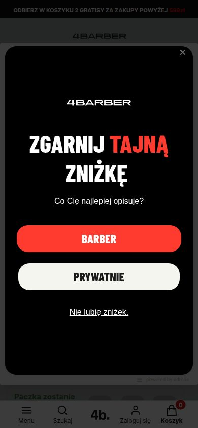
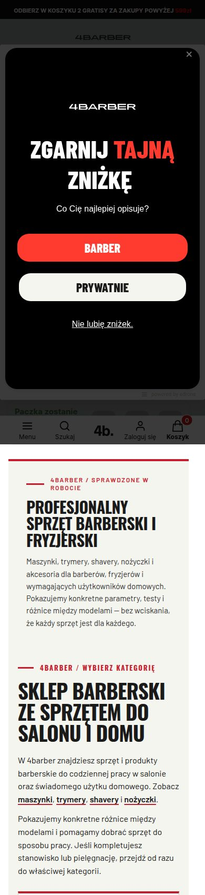
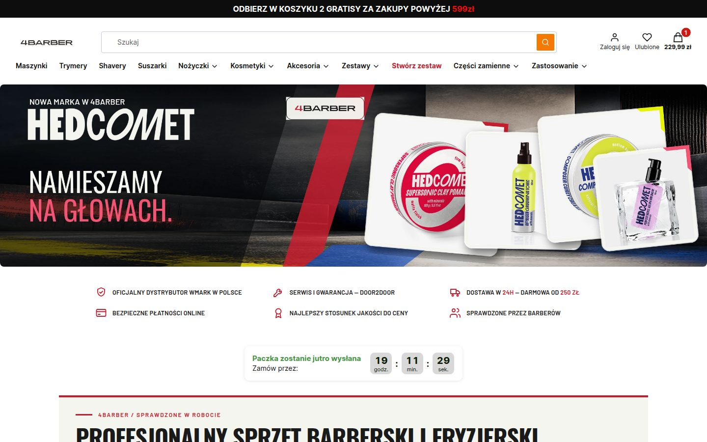
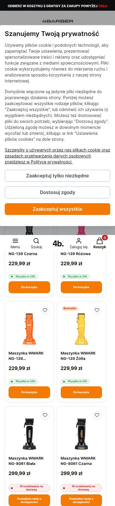
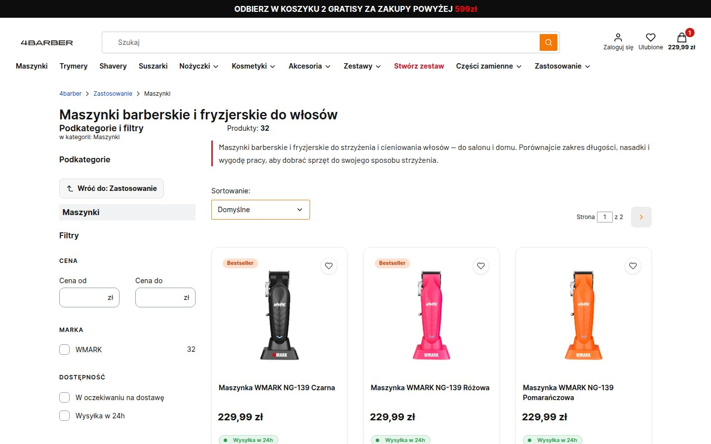
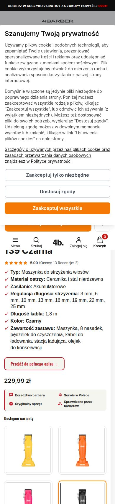
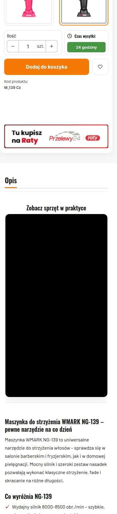
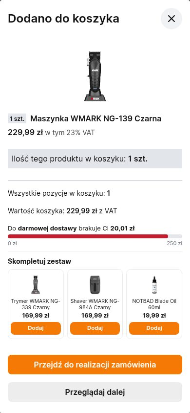
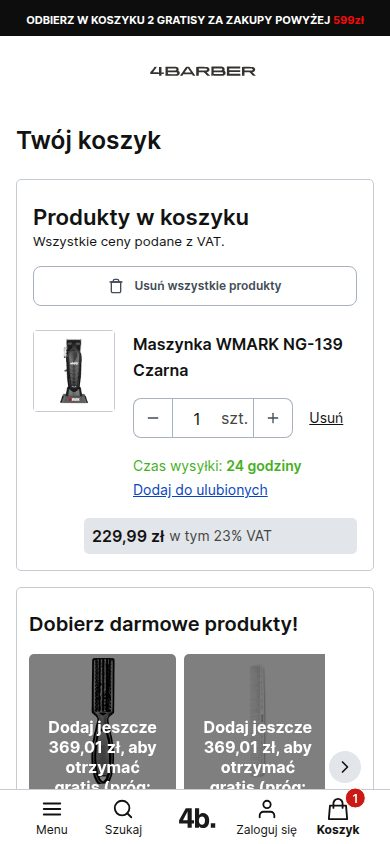
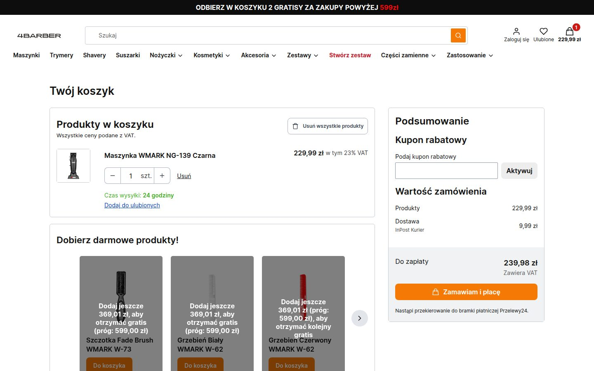

Obecny 4barber.pl — przegląd z 27.09.2026
Oglądane jak klient z reklamy: telefon 390×844 i desktop 1440. Strona główna, kategoria Maszynki, karta bestsellera NG-139, moment po dodaniu do koszyka, koszyk. Wszystkie liczby ze zrzutów i HTML sklepu (Shoper Premium), odczyt 27.09.2026 ok. 20:45.
≈1 900 pxod góry do „Dodaj do koszyka” na telefonie (ponad 2 ekrany; zrzut m-pdp p1–p2)
3 warstwyprzy wejściu na telefonie: pasek gratisów + modal cookies + popup „Zgarnij tajną zniżkę” (edrone)
brakprzyklejonego „Dodaj do koszyka” na telefonie — dolny pasek to Menu/Szukaj/Konto/Koszyk
8 360 pxdługość strony głównej na telefonie; karta produktu 6 300 px
Strona główna



Zostaje
- Pasek USP: „Oficjalny dystrybutor WMARK”, „Serwis i gwarancja door2door”, „Dostawa 24 h — darmowa od 250 zł” — to realne przewagi, mocno napisane.
- Ton „bez wciskania, że każdy sprzęt jest dla każdego” — rzadki i wiarygodny.
- Sekcja „Co mówią barberzy i klienci” z nazwiskami i Instagramem.
- Kondensowane nagłówki (Barlow/Oswald) + czerwień #C61D2E — rozpoznawalne.
Blokuje sprzedaż
- Trzy warstwy przy wejściu na telefonie — klient z reklamy zamyka dwa okna, zanim zobaczy produkt.
- Na telefonie zamiast produktów: ~1 000 px tekstu o sklepie („Profesjonalny sprzęt…”, „Sklep barberski ze sprzętem…”).
- Dwa kolory akcji: czerwień marki i pomarańcz przycisków — oko nie wie, co jest „kup”.
Kategoria: Maszynki


Zostaje
- Karta produktu na liście: zdjęcie / nazwa / cena / status dostępności / przycisk — kompletna, bez szumu.
- Uczciwe „W oczekiwaniu na dostawę” + „Powiadom mnie”.
Blokuje sprzedaż
- Filtr „Marka” ma jedną wartość (WMARK 32/32) — zajmuje miejsce, nic nie filtruje. Brak filtrów, które klient rozumie: zakres długości, do salonu/do domu, cena od–do jako suwak.
- Kolory NG-139 to 4 osobne karty (Czarna, Różowa, Pomarańczowa, Żółta) — rozmywa bestseller i wydłuża listę.
- Ta sama nawigacja z popupami co na stronie głównej.
Karta produktu: Maszynka WMARK NG-139 Czarna (bestseller, 229,99 zł)




Zostaje
- Treść karty jest dobra: parametry, „Co wyróżnia”, „Dla kogo”, FAQ, ostrzeżenie o ładowarce, wideo — to fakty, nie marketing.
- Ocena 5.00 z 13 ocen i 2 recenzjami, licznik „paczka jutro”, „Wysyłka w 24 h”, 4 ikony zaufania (Doradztwo barbera, Serwis w Polsce, Oryginalny sprzęt, Sprawdzone przez barberów).
- Modal po dodaniu do koszyka (niżej) — wzorowy.
Blokuje sprzedaż
- Cena i przycisk poza pierwszym ekranem na telefonie i desktopie; na telefonie przycisk po ≈1 900 px i bez wersji przyklejonej — po przewinięciu do opisu klient musi wracać.
- Kolejność odwrotna do decyzji: parametry (7 wierszy) przed ceną; czerwony przycisk „Przejdź do pełnego opisu” konkuruje z pomarańczowym „Dodaj”.
- Warianty kolorów jako 4 wielkie kafle (~700 px) między ceną a przyciskiem.
- Trzy liczby, które sprzedają tę maszynkę (8000–8500 obr./min, 8 nasadek 3–25 mm, ceramika) są ukryte w tekście opisu poniżej wideo.
- Opinie barberów z nazwiskiem są tylko na stronie głównej — na karcie ich nie ma.
- Wideo nie ma miniatury (czarny prostokąt do czasu załadowania YouTube).
Po dodaniu do koszyka i koszyk



Zostaje
- Checkout jednostronicowy, gość bez konta, InPost Paczkomat/Kurier 9,99 zł, BLIK/Apple/Google Pay/raty/PayPo — wszystko, co zaleca CRO, już jest.
- Pasek do darmowej dostawy w modalu.
Blokuje sprzedaż
- Pasek do darmowej dostawy jest tylko w modalu — w samym koszyku go nie ma; zamiast tego 5 szarych kafli gratisów (próg 599 zł) z komunikatem „brakuje 369,01 zł” — dla klienta z koszykiem 230 zł to szum.
- „Usuń wszystkie produkty” to pierwszy przycisk w koszyku na telefonie.
Wniosek: karta produktu to miejsce, gdzie ucieka najwięcej
- Treść jest dobra — problem to kolejność i odległość do przycisku. Na telefonie klient z reklamy widzi zdjęcie i licznik, a cena i „Dodaj” są dwa ekrany niżej, bez wersji przyklejonej.
- Trzy propozycje karty (linki w galerii) rozwiązują to samo trzema sposobami: v1 — ten sam wygląd, nowa kolejność i sticky CTA; v2 — karta wokół dowodu barberów na ciemnym stanowisku; v3 — karta techniczna maszyny z liczbami i skalą.
- Po wyborze kierunku: strona główna (warstwy przy wejściu, tekst przed produktami), kategoria (filtry, warianty), koszyk (pasek darmowej dostawy zamiast kafli gratisów).
zrzuty/audyt-2026-09-27/, fakty produktu w dane/ng139-2026-09-27.md. Żywy sklep oglądany read-only; dodanie do koszyka w sesji anonimowej bez zamówienia.